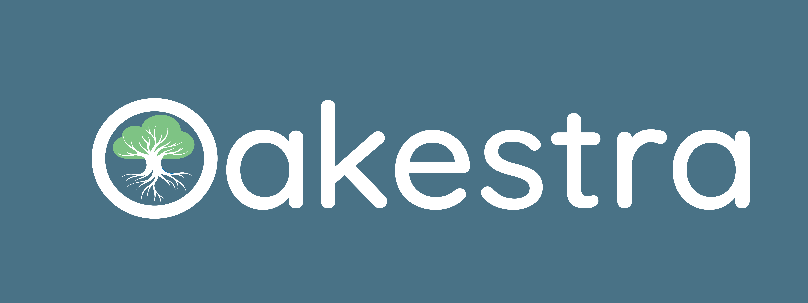
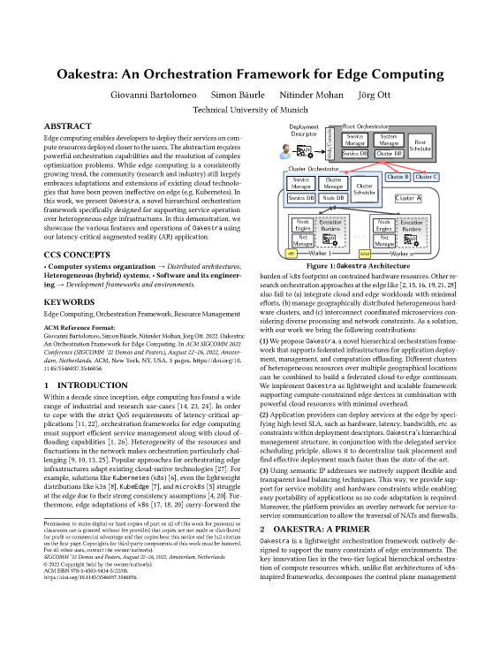
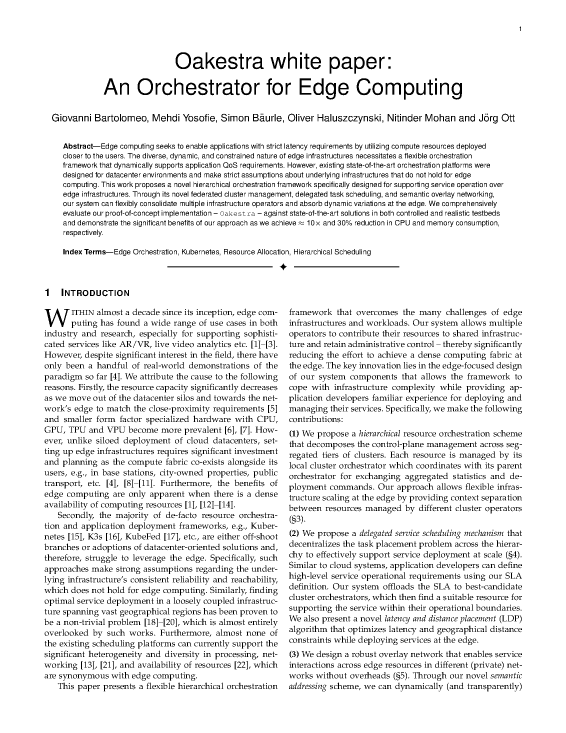

An Orchestration Framework for Edge Computing
View on
This webpage is currently under construction. Please keep checking back for updates.
In the meantime, read the associated publications to learn more about Oakestra.
Peer-Reviewed Publications

Oakestra: An Orchestration Framework for Edge Computing
Giovanni Bartolomeo, Simon Bäurle, Nitinder Mohan, Jörg Ott
ACM
SIGCOMM
Demo, 2022
DOI
White Papers

Oakestra white paper: An Orchestrator for Edge Computing
Giovanni Bartolomeo, Mehdi Yosofie, Simon Bäurle, Oliver Haluszczynski, Nitinder Mohan, Jörg Ott
DOI